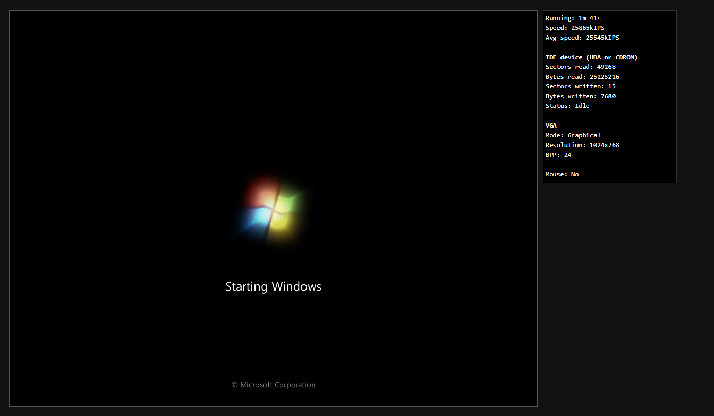
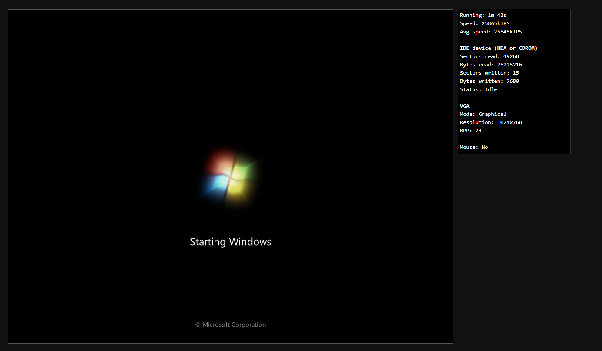

v86 - x86 emulator for the webbrowser
Check it out!V86 is a basic x86 emulator that runs with nothing but javascript. Its emulated CPU is about a pentium 1 level. Project powered by v86
V86 is a basic x86 emulator that runs with nothing but javascript. Its emulated CPU is about a pentium 1 level. Project powered by v86
